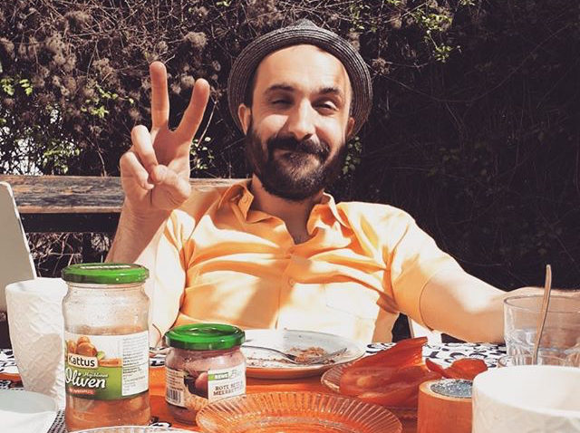

My Story So Far!

I was born in 1982 in Verona, Italy and more precisely in San Michele Extra. I had a normal childhood, including hiking, biking, kicking a ball and sometimes, bursting some firecrackers.
During my educational development, I immediately identified music, painting and computer science (especially the branch that deals with software development) as my main interests.
I started playing guitar when I was very young, fascinated by a live video of Black Sabbath on television. Having been in touch with guys who shared the same passion, I formed almost immediately the first rock band.
From that moment on I never stopped playing and composing music, until today.
Thanks to music I was able to learn and improve languages, mainly English, developing a real passion for ways of saying and slang. This interest led me to undertake language studies, but without ever getting an university degree.
However, music was not the only determining factor in language learning, as it was also thanks to video games that I greatly expanded my lexical skills.
Over the years I have been using computers intensively to create images, posters and in a couple of cases, websites for my projects. This allowed me to become familiar with the main software and operating systems.
I lived in Verona until I was 26 years old with my father (now deceased) and my mother. In 2008 I packed my things and went to live in Berlin, where I still live.
In 2010 I discovered the technique of Vipassana meditation that led me to undertake an intensive and very rewarding volunteer path. For this reason I have lived and traveled between various meditation centers in Europe and India.
My goal now is to follow a training course as a web developer that I hope will enable me to travel and work where I like, allowing me to settle in more places, absorbing the culture and language.